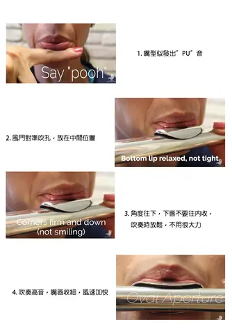
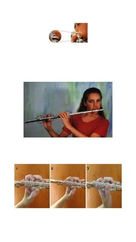

影片
聽一聽，再決定喜歡哪一種聲音。
演奏分享
張老師的長笛、竹笛、洞簫、陶笛與空靈鼓演奏。按一下縮圖才會載入影片。
空靈鼓音色示範
想先知道空靈鼓是甚麼聲音，可以由這兩首開始。
吹奏教學
長笛與笛子的基本吹奏：持笛、嘴形、指法與發音。





大師班分享
張老師推薦學生觀看的長笛大師班，涵蓋嘴形、音色、音階練習與高音區的控制。影片來自各大師及機構的公開頻道。
從你現在的程度開始
把想學的樂器、已有經驗及可上課時間告訴張老師，一起討論合適的學習安排。